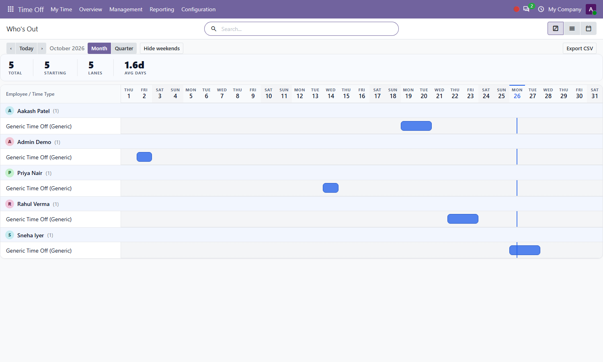
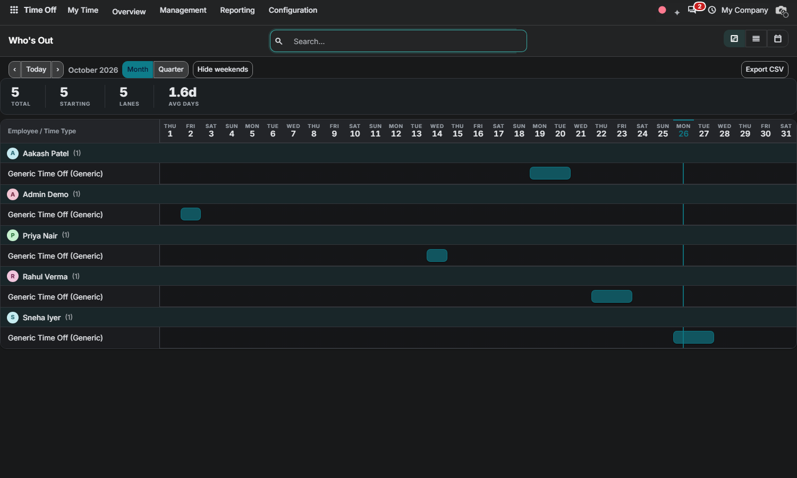

Free Odoo 20.0 Community • By Zeetavix
Nova Leave Gantt answers "who is out, when" at a glance — rebuilt from scratch: sections by employee, bars per leave request, month and quarter views. Drag to reschedule exactly like the Time Off reschedule flow; approvals stay in the Time Off app where they belong.
Each employee gets a section, each leave type a lane. Drag a bar to reschedule it; state transitions (approve, refuse, cancel) still happen in Time Off.

The timeline follows your backend theme: elevated header band, dimmed weekends, a crisp today line and a theme-aware accent.

Nova Gantt (bundled engine, auto-installed dependency) • hr_holidays
By Zeetavix — https://zeetavix.com
Version: 20.0.1.0.0
License: LGPL-3 (free and open source)
Price: Free
Dependencies: nova_gantt, hr_holidays
Built for: Odoo 20 Community — no
Enterprise code used or required.
Install: drop the nova_leave_gantt
folder in your addons path, update the apps list,
install. Installing this module pulls in the nova_gantt engine automatically.
Support: support@zeetavix.com